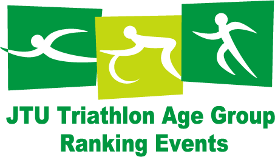

2016年に開催されたイベントのページです。TMTUの様々な活動の様子をご覧ください。
開催中・参加募集中のイベントについては、トライアスロンイベントのページをご覧ください。
また、それ以前のイベントについては、以下をご覧ください。
「第27回 東京都トライアスロン選手権大会」 （選手権の部）は、日本トライアスロン選手権東京ブロック代表選手および第71回国民体育大会東京都代表選手の選考を兼ねた、重要な大会です。
一般の方および高校生は、「東京都トライアスロン渡良瀬大会」（一般の部、 高校生の部、 リレーの部）に参加できます。この大会は、JTUエイジランキングの対象となります。
| 開催日： | 2016年6月19日（日） |
| 開催地 ： | 渡良瀬遊水地（群馬県邑楽郡板倉町） |
| アクセス ： | 車の場合：東北自動車道館林インターチェンジより約20分 |
| 電車の場合： | 東武日光線 板倉東洋大学前駅下車 徒歩約20分 |
| 申し込み締切： | 2016年5月31日（火） |
東京都の地域組織では、どなたでも参加できる練習会を行っています。詳細は各地域組織のWebサイトをご覧ください。
2016年3月に標題の講習会を東京都江戸川区で開催いたします。
この資格は、トライアスロンの初心者～中級者を対象として、競技を安全に正しく指導するための公認指導者資格です。
日本体育協会公認「トライアスロン指導員」資格取得には、JTU公認〈初級〉〈中級〉指導者資格の取得と、日本体育協会「共通科目Ⅰ」の修了が必要です。
なお、講習会参加者は、自己の責任で健康と安全に十分留意することとし、本講習会の傷害保険は、本文中「受講料」に明記した内容をご了解願います。
| 日 時： | （申込後に「受講案内」で詳細情報を送付） 〈初級〉 2016年3月20日（日）9：15（受付8：45）～3月21日（月・祝）19：30解散 〈中級〉 2016年3月19日（土）9：45（受付9：15）～3月21日（月・祝）18：20解散 |
| 会 場： | 東京スポーツ・レクリエーション専門学校 東京都江戸川区西葛西7-13-12（TEL: 03-5696-9090） |
| 主 催： | （公社）日本トライアスロン連合（JTU） |
| 主 管： | （公社）日本トライアスロン連合（JTU）指導者養成委員会 |
| 協 力： | （一社）東京都トライアスロン連合（TMTU） |
| 受講資格： | 〈初級〉 2015年4月1日現在、満18歳以上のJTU登録者で、次の「1）～7）」の いずれかに該当する者。なお、資格取得後も継続してJTU登録会員であること。
2015年4月1日現在、満19歳以上でJTU公認初級指導者資格を有する者。（18時間の初級科目受講を修了している者） 2005年度以前に初級指導者養成講習会を受講し、9時間のみ初級科目を修了している者は、本講習会受講前に次の4科目（基礎理論、ラン、バイクメンテナンス、競技ルール）についてレポート提出が必要。 |
| 講習内容： | 〈初級〉
|
| 受講料： | 〈初級〉17,000円、〈中級〉33,000円
|
| 定 員： | 初級・中級とも各30名（先着順を優先。申込締切 2016年3月4日。定員になり次第、締切） |
| 申し込み： | 初級 申し込みはこちら 中級 申し込みはこちら 初級受講条件1）・2）・3）・4）・5）の該当者は、詳細を申込フォームの入力欄に記入すること。 初級受講条件「6）加盟団体推薦」または「7）自己推薦」の該当者は、次の2ヶ所へ推薦書を送ること。 1]鈴木功士JTU指導者養成委員 koshi0807@me.com 2]JTU#01事務局 jtuoffice01@jtu.or.jp ◎個人情報は、本講習会の実施のために使用します。なお、合格者氏名、所属加盟団体、取得会場・年月日は、JTUウェッブマガジンなどで公表します。 |
| スケジュール： （一部予定） |
〈初級〉 3月21日（月・祝） 〈中級〉 3月20日（日） 3月21日（月・祝） |
| 日 時： | 2016年2月28日（日） 13：00～13：05 開会挨拶（12：30受付開始） 13：05～14：35 講義1（休憩15分） 14：50～16：20 講義2 16：20～16：25 閉会挨拶 |
| 会 場： | 日本学園高等学校 東京都世田谷区松原2-7-34（京王線「明大前駅」徒歩5分） |
| 主 催： | （公社）日本トライアスロン連合（JTU） |
| 主 管： | （公社）日本トライアスロン連合（JTU）指導者養成委員会 |
| 協 力： | （一社）東京都トライアスロン連合（TMTU） |
| 研修内容： |
|
| 参加費： | 日体協トライアスロン指導員・JTU指導資格者 2,000円 JTU登録者（2015年度） 2,500円 一般 3,000円 |
| 申し込み締切： | 2月21日（日） 定員50名 |
| 申し込み先： | こちらからお申し込みください。 ＊個人データは本研修会に限定して使用します。 |
| 指導者資格への特典： | 当研修会は、日体協トライアスロン指導員及びJTU指導資格者の研修会参加として認定され、次の特典を授与する。 （1）日体協指導員には資格更新時の単位授与。 （2）JTU初級指導者及びJTU中級指導者は、資格更新時のレポート提出を免除。 （3）一般参加者には、JTU初級指導者養成講習会の受講資格を授与。 |
| その他： | 本研修会の会場は、日本学園にご提供いただいております。 日本学園にはトライアスロン部があり、選手達は各大会で活躍しています。 例年、本研修会参加者の皆様に、高校生トライアスリートをトライアスロングッズ寄付という形での応援をお願いしております。 使用していないトライアスロングッズがありましたら、日本学園トライアスロン部への寄付にご協力お願いいたします。 ・フィニッシャーTシャツ ・バイクボトル ・スイムキャップ 等 ＊著しく汚れている物は不可。できるだけ新品に近い物でお願いします。 ＊研修会の受付時にご持参下さい。 |
| 日 時： | 2016年2月21日 (日) |
| 会 場： | 渋谷区勤労福祉会館（ 東京都渋谷区神南1-19-8 Tel.03-3462-2511） |
| 主 催： | （一社）東京都トライアスロン連合（TMTU） |
| 詳細情報・ 申し込み： |
こちらからお申し込みください。 募集要項 |
| 締 切： |
2016年2月8日 (月) *応募状況等により変更する場合があります。 |
| 日 時： | 2016年3月6日（日） |
| 会 場： | スイム：中央大学多摩校舎第2体育館室内プール［公認25ｍ×7コース］ ラン： 上柚木公園陸上競技場 ［第2種公認400ｍ全天候トラック］ |
| 申し込み： | 申込はWebエントリーのみとなります。 こちらからお申し込みください。 |
| 備 考： | ※2016年エリート推薦を希望する場合は、認定記録会のスイム・ランの記録が必要となる場合があります。 ※Aタイプ16歳～19歳に参加する選手で、各種指定及び推薦の為にラン5キロの計測を希望する選手は、そのままお申込みいただき、計測差額料1000円を当日お支払下さい。 尚、その旨をTMTU事務局までメールにて事前にご連絡下さい。 |
| 12年リザルト | 13年リザルト | 14年リザルト |
| 09年全リザルト | 10年リザルト | 11年リザルト |
| 06年リザルト | 07年リザルト | 08年リザルト |
| 12年リザルト |
| 2010年度 | 2011年度 | |
| 2007年度 | 2008年度 | 2009年度 |